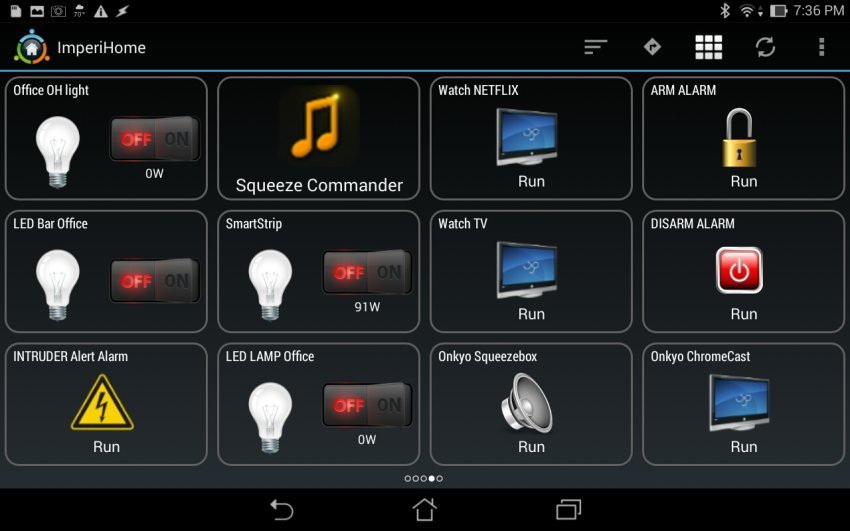

Orange Pi PC 2 - Установка Linux, Domoticz + ImperiHome
22 августа 2017, 11:52
Здравствуйте друзья
Наконец у меня «дошли» руки, до разворачивания второго сервера управления умным домом Domoticz — и в этом обзоре я постараюсь подробно рассказать о том, как я это сделал.
Для тех что не читал, дам ссылку на свой обзор Raspberry Pi Model 3 B — устанавливаем систему управления умным домом Domoticz . Малинка усердно трудится на ниве автоматизации задач, но система растет — на данный момент 61 устройство только Xiaomi и все бы ничего — но проблема в том, что к одному серверу домотикз можно подключить только 1 шлюз Xiaomi. А у меня их три — правда 1 — Aqara, без режима разработчика, но другие два — с возможностью подключения.
Разработка сайта на Tilda!Продающие Сайты от 65 000 Руб.! Только Сегодня Реклама в Подарок! Заказывайте!Узнать большеlogster.agencyЯндекс.Директ
В качестве второй платформы, я решил остановится на Orange Pi PC 2.
Покупал комплект в магазине Banggood, ссылки ниже
ORANGE PI PC 2
БЛОК ПИТАНИЯ ORANGE PI 5V/3A EU
Технические характеристики
CPU - Allwinner H5, ARM Cortex-A53 Quad Core
GPU - Mali450MP, Hexa-core
RAM - 1 GB
Хранилище - microSD, NOR Flash 2Mb
Сетевые возможности - Ethernet 10/100/1000
Видео вывод - HDMI
USB порты - 3
Беспроводные возможности - Инфракрасный порт
Аудио вывод - 3,5 Jack, HDMI
GPIO - 40 pins
Питание - 5V 2A
Коробка, комплект поставки
Поставляется миникомп в картонной коробке, с надписью Orange Pi
Внутри — запаянная в антистатический пакет плата компа
В комплекте больше ничего не идет, поэтому при покупке нужно сразу заказать блок питания и комплект радиаторов — как минимум.
Внешний вид, описание
Практически все элементы и порты находятся на верхней части платы, на нижней только картоприемник
|
|
Описание всех элементов и портов:
Если еще кто-то не обратил внимания — то уточню — здесь нет Wi-Fi ( и bluetooth тоже).
Я сразу установил комплект радиаторов — CPU радиатор точно совпал по размерам, для чипов памяти — они несколько меньше. Но забегая вперед скажу, что неоднократно замеряя температуру, в процессе установки ПО — выше 40 градусов не было ни разу, в среднем 37.
Размеры -
в масштабе со спичечным коробком
Установка операционной системы
Для установки ОС — нам необходима SD карта, желательно не менее 8 ГБ, и желательно иметь хотя бы две одинаковые карты — ибо бекапы. Я дополнительно не покупал, так как имею порядочный запас карт, для апельсинки приберег две карты MICROSD 16GB SAMSUNG CLASS 10
Диструбитивы ОС для апельсинок находятся ЗДЕСЬ находим нашу модель и качаем — я взял Debian Desktop — может будет охота в будущем поиграться с ней, но с тем же успехом можно взять более компактный Debian Server
Распаковываем img системы (может быть архив в архиве — .xz в .rar) — нам нужен именно .img файл, дебиан десктоп — 2 ГБ с кепкой. Пишем на microSD при помощи Win32 Diskimage — ССЫЛКА
После того как флешка записывается — вставляем ее в картоприемник апельсинки и включаем питание.Через минутку — даем системе загрузится, заходим в список DHCP клиентов на домашнем роутере и ищем адрес выданный для OrangePi
Теперь можно заходить на нее через SSH используя любой SSH клиент — я использую старый добрый Putty.
По умолчанию, для апельсинового дебиана, используем следующие учетные данные -
user — root, pass - orangepi, но рутовый доступ через SSH закрыт, заходим под пользователем orangepi, пароль такой же. Пользователь orangepi — входит в группу sudo.
Сразу меняем пароль на свой командой
passwd
Далее переходим в учетную запись root командой
su
и аналогично меняем пароль для root. После этого выходим из учетки root — все делаем под пользователькой учеткой.
Если хотите добавить другого пользователя, то воспользуйтесь командой
sudo adduser [имя юзера]
И добавьте его в группу sudo командой
sudo adduser [имя юзера] sudo
Далее, прописываем статический IP адрес для малинки (либо в настройках DHCP роутера) либо командой
sudo nano -wuc /etc/network/interfaces
И в файле прописываем адрес
#The primary network interface
allow-hotplug eth0
iface eth0 inet static
address 192.168.0.98 - наш IP
netmask 255.255.255.0 - маска
gateway 192.168.0.1 - шлюз
Перегружаемся для применения настроек
Меняем часовой пояс при помощи команды
sudo dpkg-reconfigure tzdata
И ставим ntp
sudo apt-get install ntp ntpdate
после установки прописываем свои ntp сервера в файле настроек вместо дефолтных
sudo nano /etc/ntp.conf
в моем случае — для Украины, подробнее о пуле ntp серверов можно узнать здесь
Синхронизируемся и радуемся точному времени.
Подготовка к установке domoticz
Перед установкой — нужно обновить систему, для этого сначала запускаем команду
sudo apt-get update
А после успешной загрузки -
sudo apt-get uprgade
Дожидаемся полного завершения
Теперь устанавливаем домотикз — делается это одной командой
sudo curl -L install.domoticz.com | bash
Собирается и устанавливается stable версия Domoticz
Основные настройки — задаем в окне инсталлятора, но можно все оставить по умолчанию
Через несколько минут, система установлена и доступна через web интерфейс по http и https
На данный момент стабильная версия поддерживает работу с шлюзом Xiaomi
Но я поставил beta — для совместимости версий с Raspberry Pi. Делается это запуском скрипта из домашней папки domoticz
cd ~/domoticz
sudo ./updatebeta
Система Domoticz полностью установлена.
Рюшечки, которые я потом добавил — типа локализации, установки ftp и прочего — я уже описывать не буду, мануалов по Debian много — в этом обзоре я фокусируюсь на минимально необходимом для установки именно Domoticz. Что касается интерфейса системы и вопросов добавления устройств — отошлю вас снова в свой обзор Raspberry Pi Model 3 B — устанавливаем систему управления умным домом Domoticz.
На данном этапе я настоятельно рекомендую сделать бекап — чистой, с иголочки, системы домотикз, что даст возможность мучать ее как угодно, после чего за пару минут получать исходный, чистый образ. Для создания бекапа я снимаю образ диска программой R-Drive, нашел ее на торрентах, достаточно даже portable версии — сколько раз она меня выручала — не передать.
Но чтобы еще рассказать что-то интересное, расскажу про надстройку, которую я использую для управления умным домом с смартфона -
ImperiHome
Основная страница по установке находится здесь. Это приложение для смартфонов/планшетов, выглядит примерно так — можете настраивать по своему желанию.

Сначала необходимо установить серверную часть, для начала удаляем текущую и ставим новую node
sudo apt-get remove node
curl -sL https://deb.nodesource.com/setup_4.x | sudo -E bash -
sudo apt-get install -y nodejs
После этого ставим npm
sudo npm install -g npm@2.x
И проверяем версии
node -v // должна быть не менее 4.4.x
npm -v // должна быть не менее 2.2.x
Далее приступаем к установке серверной части системы
wget -qO - http://www.e-nef.com/domoticz/mdah/gpg.key | sudo apt-key add -
открываем файл с источниками
sudo nano /etc/apt/sources.list
и добавляем строку -
deb http://www.e-nef.com/domoticz/mdah/ /
После этого рекомендуется вновь обновится
sudo apt-get update
И запустить установку серверной части MyDomoAtHome
sudo apt-get install MyDomoAtHome
После установки, вносим в файл настроек данные по своему серверу Domoticz — указываем адрес (вместо 127.0.0.1)
sudo nano /etc/mydomoathome/config.json
Теперь переходим по адресу http://ваш_ip:3002 — должна грузится стартовая страница системы, и проверяем идут ли данные от устройств — перейдя по ссылке на вкладку devices
Если картинка примерно такая — то все ок
Далее из плеймаркета ставим приложение ImperiHome. Переходим в настройки, Моя система, добавить новую систему
Далее выбираем Imperihome Standard System, прописываем адрес нашего сервера и порт 3002, и через пару секунд — клиент видит систему и показывает все выведенные в данный момент переключатели.
Все устройства отображаемые в панели переключателей Domoticz — будут показаны в Imperihome, тут вы можете их переименовывать (на домотикз это не влияет) выносить в избранное и т.д.
Работать клиент с Домотикзом — может только в домашней сети (если конечно у вас не хватит ума засветить ИП сервера домотикза на публичный IP адрес), для работы удаленно — вам понадобится VPN сервер.
У меня на данный момент работает временное решение в виде Open VPN на Raspberry — я хочу организовать это, как постоянное решение — силами роутера. Так как мой текущий роутер не позволяет это делать — мне пришлось его обновлять, решая на самом деле еще ряд проблем. Но это будет темой следующего обзора.
Кто хочет подробнее просмотреть все описанное в обзоре, может сделать это просмотрев мой видеообзор
На этом все, надеюсь обзор был полезен, спасибо за внимание
�